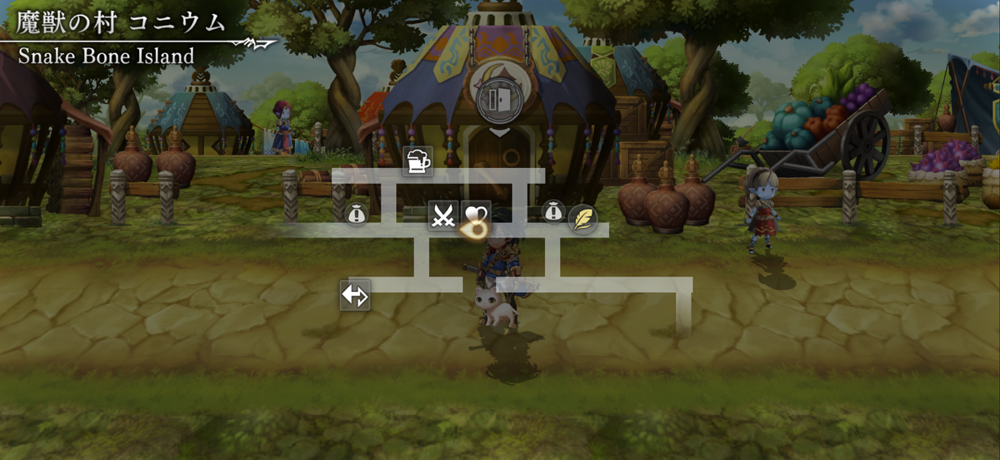

| 緑の村 バルオキー | | |
| ヌアル平原 | |  |
| 月影の森 | |  |
| エルジアン・エアポート | |  |
| 最先端の都市ニャマスね！ 根時代では どんな物が売っているんニャマス？ | 曙光都市エルジオン | 未来・ミグレイナ大陸 | |
| 廃道ルート99 | |  |
| 工業都市廃墟 | |  |
| ゾル平原 | |  |
| さすが火の村……！ ヒトに土地にも熱気を感じるニャマス！ | 火の村 ラトル | 古代・ミグレイナ大陸 | |
| ヴァシュー山岳 | |  |
| ナダラ火山 | |  |
| ティレン湖道 | |  |
| 湖の上に街が……！ 小舟に揺られて 優雅に まわってみたいニャマスね。 | 水の都 アクトゥール | 古代・ミグレイナ大陸 | |
| デリスモ街道 | |  |
| パルシファル宮殿 | |  |
| 人喰い沼 | |  |
| ケルリの道 | |  |
| 時の塔 | |  |
| カレク湿原 | |  |
| 王都 ユニガン | | |
| 素敵なお城が こんな姿に…… 争いとは 愚かニャマスね…… | ミグランス城 | 現在・ミグレイナ大陸 |  |
| セレナ海岸 | |  |
| 港町 リンデ | |  |
| ゼノ・ドメイン | | |
| 穏やかで 美しい海岸…… 世界の果てに ふさわしい場所ニャマスね！ | 最果ての島 | 未来・ミグレイナ大陸 | |
| 綺麗な黄金色の麦畑ニャマス！ かくれんぼしたら 楽しそうニャマスね。 | ラウラ・ドーム | 未来・ミグレイナ大陸 | |
| コリンダの原 | |  |
| 星の塔 | |  |
| 魔獣城 | |  |
| ルチャナ砂漠 | |  |
| 砂漠の村 ザルボー | | |
| 草原の村 サルーパ | | |
| チャロル草原 | |  |
| 古戦場跡 | |  |
| 蛇尾コラベル | |  |
| 蛇背ガバラギ | |  |
| 魔獣の村 コニウム | |  |
| 魔獣城 隠し通路 | |  |
| 蛇首イゴマ | |  |
| 蛇肝ダマク | |  |
| にゃ～！ 夕焼けが素敵ニャマスね！ | 蛇頭メズキータ | 現代・ミグレイナ大陸 |  |
| | |  |
| | |  |
| | |  |
| | |  |
| | |  |
| | |  |
| | |  |
| たくさんのヒトの熱狂が伝わってくる…… 賑やかなスタジアムニャマス！ | サテラ・スタジアム | 未来・ガルレア大陸 |  |
| この里 寒すぎるニャマス！ はやく かまくらの中に避難するニャマス！ | 隠れ里 イトイス | 現代・ガルレア大陸 |  |
| 早く連れ戻すニャマス！ 生きている者が いるべき世界じゃないニャマス！ | 煉獄界 | 古代・ミグレイナ大陸 |  |
| 山風が涼しくて 風車の音が 心地いい国ニャマス～。 | 山の国 ガダロ | 古代・ガルレア大陸 |  |
| ワタクシたち猫にとって 居心地がよさそうな社ニャマスね……！ | 猫神神社 | 現代・ガルレア大陸 |  |
| 木の上に大きなヒトたちがいっぱい…… スケールの大きな村ニャマス。 | 古代樹の村 パドレ | 古代・ガルレア大陸 | |
| ベンチに座って 空中から街を 一望できるなんて……！ すごい技術ニャマス！ | 空中遊郭 イージア | 未来・ガルレア大陸 | |
| 見晴らしがいい街ニャマスね。空に 浮かんだ大きな木が よく見えるニャマス。 | 浮遊街 ニルヴァ | 未来・ミグレイナ大陸 | |
| 色鮮やかな国ニャマス！ 猫ちゃんのレースも 興味深いニャマスね！ | 辰の国 ナグシャム | 現代・ガルレア大陸 | |
| 立派な提灯ニャマスね…… お堀を見ながら 一息つくニャマスか？ | 巳の国 イザナ | 現代・ガルレア大陸 | |
| | | |
| | | |
| | | |
| | | |
| | |  |
| | | |
| | | |
| | | |
| | |  |
| | |  |
| | |  |
| | |  |